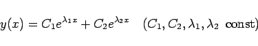
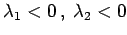
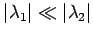
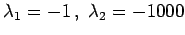
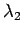

Inhalt Index DeskTop Bronstein

 Numerische Mathematik Integration gewöhnlicher Differentialgleichungen Anfangswertaufgaben Konvergenz, Konsistenz, Stabilität
Numerische Mathematik Integration gewöhnlicher Differentialgleichungen Anfangswertaufgaben Konvergenz, Konsistenz, Stabilität


Bei vielen Anwendungen, z.B. in der chemischen Kinetik, führen mathematische Modelle auf Differentialgleichungen, deren Lösungen sich aus verschieden stark exponentiell abklingenden Anteilen zusammensetzen. Solche Differentialgleichungen werden als steif bezeichnet. In dem Beispiel
|  | (19.117) |
mit  und  leistet für den Fall  der zu  gehörende Term keinen Beitrag zur Lösung, er beeinflußt aber ganz wesentlich die Wahl der Schrittweite h eines Näherungsverfahrens, so daß der Einfluß der Rundungsfehler sehr stark anwächst. Dann ist die Auswahl geeigneter Näherungsverfahren unbedingt notwendig (s. Lit. 19.25).